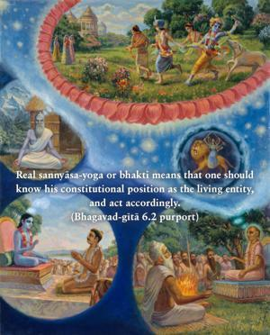
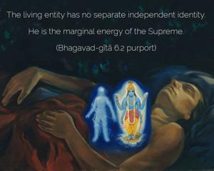
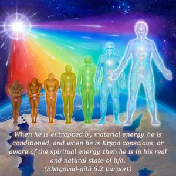
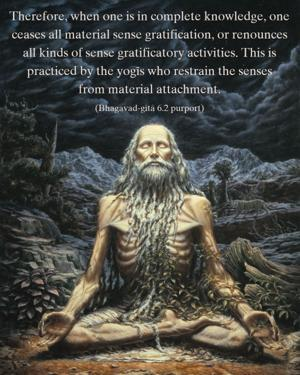

What is called renunciation you should know to be the same as yoga, or linking oneself with the Supreme, O son of Pāṇḍu, for one can never become a yogī unless he renounces the desire for sense gratification.




Real sannyāsa-yoga or bhakti means that one should know his constitutional position as the living entity, and act accordingly. The living entity has no separate independent identity. He is the marginal energy of the Supreme. When he is entrapped by material energy, he is conditioned, and when he is Kṛṣṇa conscious, or aware of the spiritual energy, then he is in his real and natural state of life. Therefore, when one is in complete knowledge, one ceases all material sense gratification, or renounces all kinds of sense gratificatory activities. This is practiced by the yogīs who restrain the senses from material attachment. But a person in Kṛṣṇa consciousness has no opportunity to engage his senses in anything which is not for the purpose of Kṛṣṇa. Therefore, a Kṛṣṇa conscious person is simultaneously a sannyāsī and a yogī. The purpose of knowledge and of restraining the senses, as prescribed in the jñāna and yoga processes, is automatically served in Kṛṣṇa consciousness. If one is unable to give up the activities of his selfish nature, then jñāna and yoga are of no avail. The real aim is for a living entity to give up all selfish satisfaction and to be prepared to satisfy the Supreme. A Kṛṣṇa conscious person has no desire for any kind of self-enjoyment. He is always engaged for the enjoyment of the Supreme. One who has no information of the Supreme must therefore be engaged in self-satisfaction, because no one can stand on the platform of inactivity. All purposes are perfectly served by the practice of Kṛṣṇa consciousness.